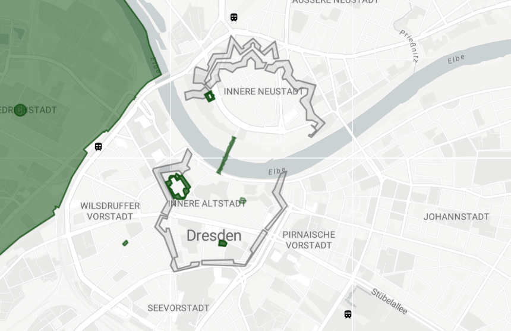
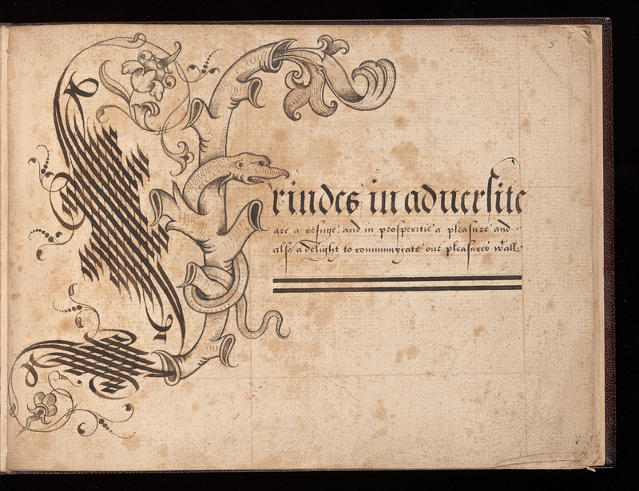
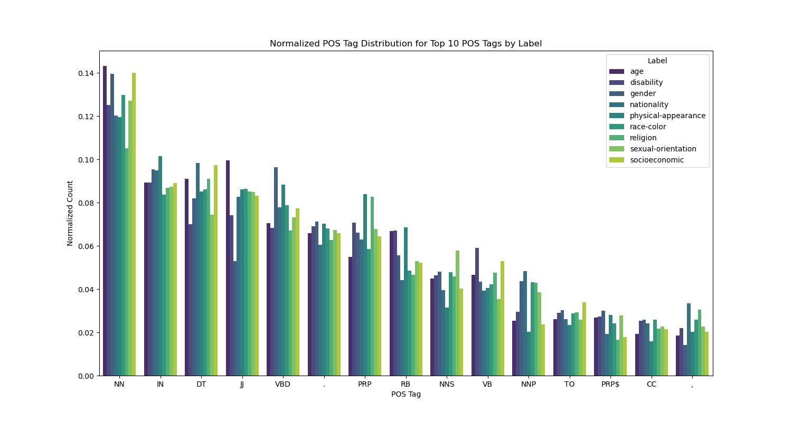
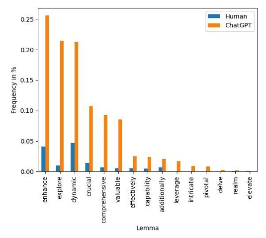
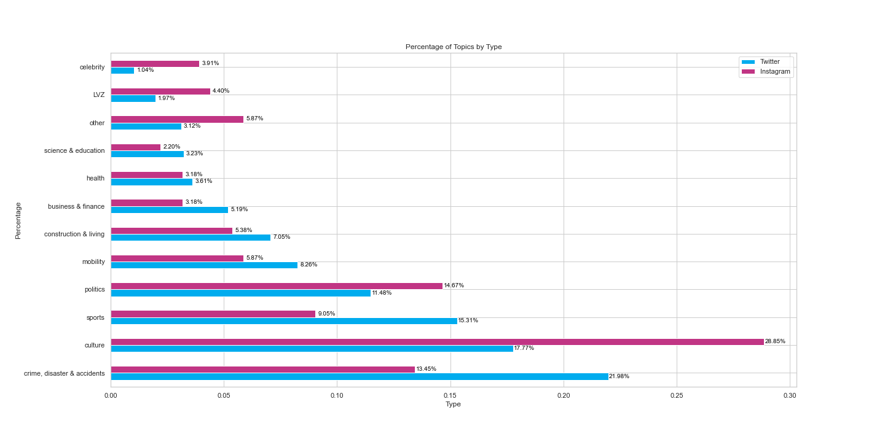

Hi there, I'm Luise Pohlmann, a Masters's student of Digital Humanities in Göttingen, Germany. I love languages and programming. I am at my happiest when I'm tinkering around with a new tech project or reading and writing. Throughout my education I have always worked with unstructured data and enjoy finding creative solutions to the problems at hand.
My favourite part of the week is dance class. I love trying new styles of dance, my current favourite is shuffle. I'm also a big boardgame-nerd and playing board games with friends is one of my favourite ways to spend a weekend.
Specialized in computational methods for humanities research and digital text analysis, including digital editions, digital palaeography, and corpus linguistics.
Thesis: Topics, Registers, and Syntax – A Natural Language Processing Comparison of Platform Vernaculars of News on Instagram and X.
Focus on programming skills and media production, including video editing. I also volunatrily took some classes English Studies and creative writing.

Digital methods have made it feasible to geo-reference large corpora of historical texts and create multimodal representations of multifaceted data. This allows researchers to combine different datasets to create a deeper understanding of historical cities. By adding individual’s stories the map becomes meaningful beyond the mere geographical data.

John Scottowe (d.1607), also known as 'the writing master of Norwich', is the author of multiple alphabet books with ornate capitals. Only two of his manuscripts have survived, one being the here discussed Chicago, Newberry Library, VAULT Wing MS ZW 545 .S431 (the image shows folio 5 recto), which was published in 1592.

This project compares three language models (ALBERT, T5-small, and DistilGPT-2) on their performance on cleaned, criticized, and control subsets of the race/color category of the CrowSPairs challenge set. Results show that DistilGPT-2 is the best performing model on all three subsets. However, all models perform worse on the cleaned dataset, suggesting that the short- comings of the CrowSPairs dataset obfus- cate how biased language models truly are.

In anecdotal evidence on X, words like delve, safeguard, robust, and demystify are certain signs of LLM’s writing (Graham, 2024). However, current research shows that it is not as easy to tell the difference as one may think.

This thesis provides a comparative exploration of the platform vernaculars of Instagram and X, by analyzing posts published by the Leipziger Volkszeitung. Despite sharing similar content, this analysis discovers significant differences in the selection and presentation of news on the two platforms.